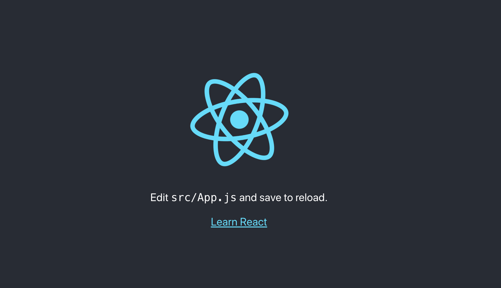
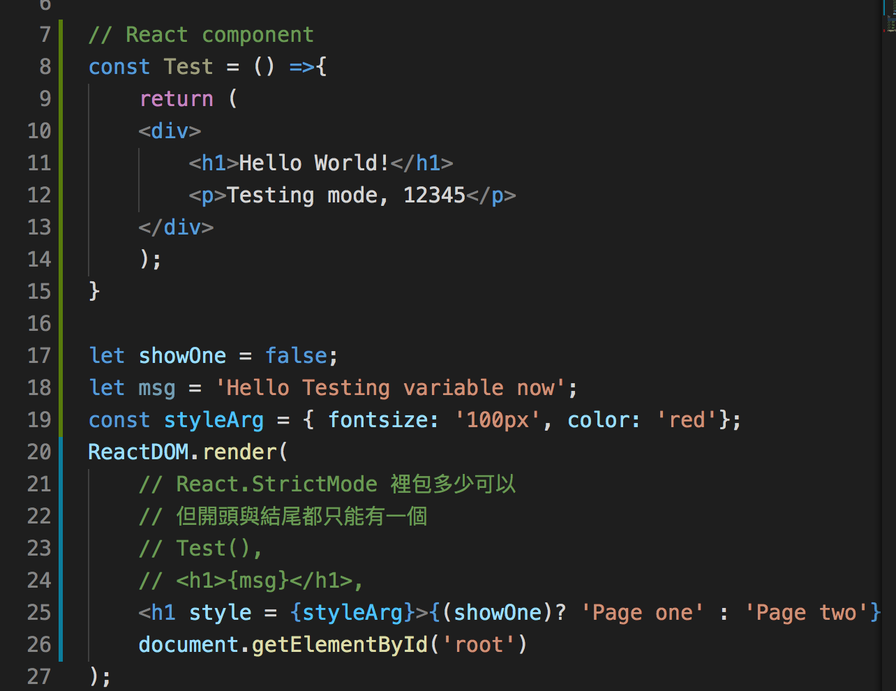
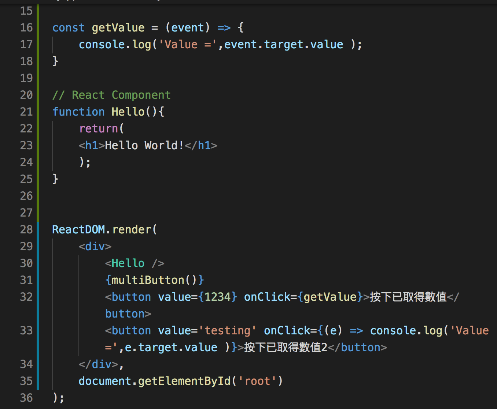
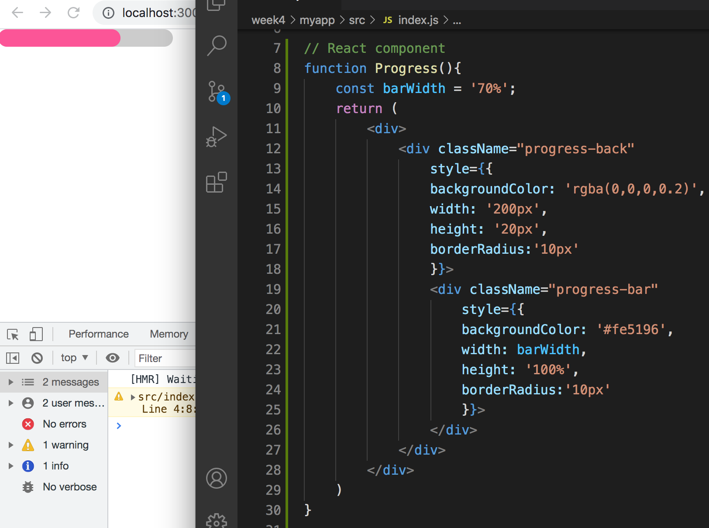

JavaScript ES6
ES6 使用module
- ES6中，我們可以把js函式、變數、物件打包成模組，然後在其他js檔引入使用
- 方法是透過export在被模組化的檔案中設定要讓別人使用的東西
- 在要使用的地方用import、給予一個名字，被輸出的檔案會變成一個物件，名稱是剛剛給予的名字，以物件方式存取就能使用
node 要使用 ES6 module 模組，需創建 package.json ，裡頭放入："type":”module"
2021/07/19 Web front-end development
ES6 使用module
node 要使用 ES6 module 模組，需創建 package.json ，裡頭放入："type":”module"
React -
使用React前端網頁介面程式庫後
React 是一個專注在 UI（view）的 JavaScript 程式庫
成功！（關閉後要再次開啟直接 $npm start 即可。大部分情況不用再重新 start，重整畫面即可）
使用 React 時發現一個問題，我之前有下載 html 自動排版的外掛，使用 React 排版會不一樣使操作錯誤，這時用 command+shift+X（mac） 開啟 vscode 外掛頁面，把 JS-CSS-HTML Formatter 暫停使用。
ReactDom
運作流程：
JavaScript XML, JSX - JavaScript 裡包 HTML
實際操作圖：
 React Component
可以做出進度條，並依照父輩大小，子輩使用百分比去調整。
props 對 component 的影響
在 react component 中，我們把包在標籤中間的東西，稱為 children - <App> 其他資料 </App>。當 children 的內容改變時，畫面也會重繪。
state 與 setState
今天學了前端框架之一的—— React！很是期待已久的內容，學起來也覺得頗有趣的，雖然依然有很多東西要繼續再自己鑽研，但覺得 coding 真的是挺有趣的，時不時就會這麼覺得，遇到 error 時，就像玩找碴 XD，沒有 error 時，看到畫面成功呈現也覺得很有成就感！